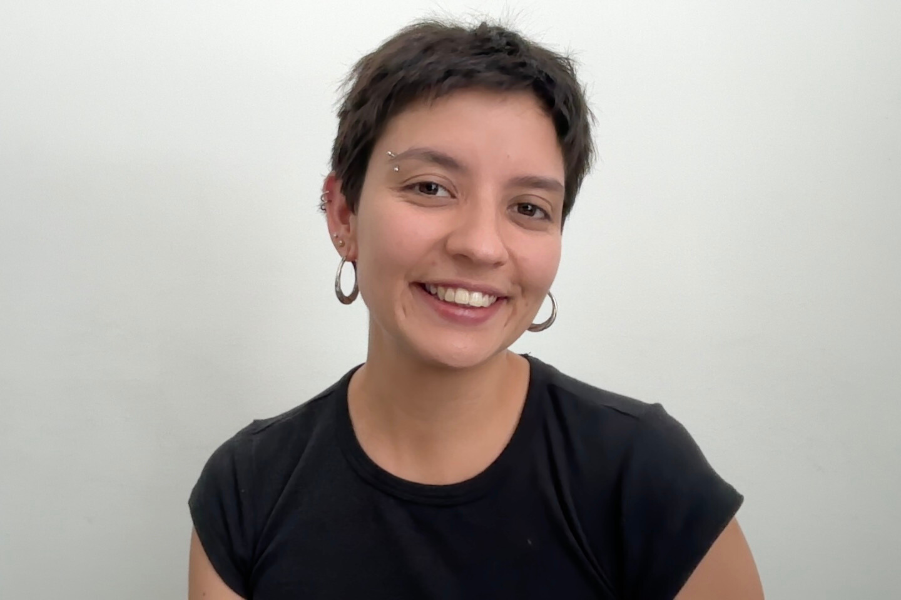

PhD Candidate · Social Sciences
I am a PhD student in the Department of Political and Social Sciences at Universitat Pompeu Fabra, under the supervision of Alba Lanau Sánchez, since 2024.
My research interests center on migration and family dynamics, with a particular focus on care and motherhood. My PhD project revolves around Latin American migrant mothers in Barcelona, their access to childare services, and the care strategies they adopt.